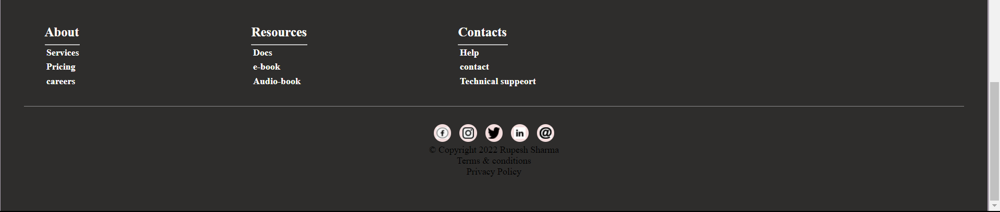
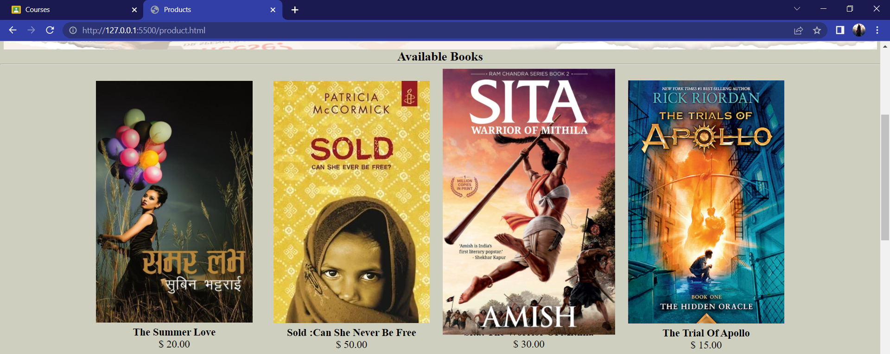
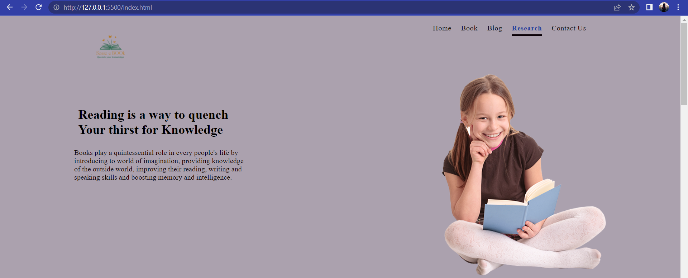

While developing the front end of this website I visited lots of websites among which Spotify was one of them the most common thing I found in a website was footer section included lots of services and information about the website along with the privacy and terms and conditions. I was highly inspired from Spotify footer that eventually made up my mind to implement my own website also known as front end of the website. the footer section of the website contains some of the facilities and social media handle links which helps the user to easily navigate to our social media handles and get connected with us. Similarly, we have copyright status and terms and condition along with privacy policy mentioned in it. This was the part which I liked the most from Spotify which was also inspiration for me to create similar or congruent footer section for my own website.
This is the proof that and screenshot of my website which I was inspired from Spotify website footer section. I just tried my best to make my footer look like the footer section of Spotify although it was not easy, but I made it anyhow with all my effort and patience. Let's not forget, how fascinating the footer section of Spotify look like this is the reason why most of the website has footer section like Spotify although colour and alignment another portion me differ from it. Maybe this was the only reason too interested to replicate the footer section of Spotify and the above picture of my website shows just a comparison between Spotify and my website footer section. It was not Ditto copied from Spotify rather it was inspired from it see how it looks like.
The most of work for me was making product page or book section go to website as it was more complicated than I expected it to be. I tried my best to make it look like front end of the commercial ecommerce website. for this purpose, I visited lots of commercial websites especially related to books and clothing so that I could get some idea about how my website would look like. In the same way I visited other websites to check out their book section and how it looks like. in this process I came across. meanwhile, I came across one of the beautiful websites which has one of the most versatile and design within it. I couldn't stop myself getting inspired from such a beautiful website. That is what it brough me to work harder for developing the book section of a commercial website that could be used to use to sell and buy books online so is in comfort. the most beautiful thing I've found in that website was the hover effect used by using the mouse cursor to the product that his books. I was so fascinated from the over effect that I planned it to implements in my website which I was currently working on.
This is the proof that and screenshot of my website which I was inspired from Spotify website footer section. I just tried my best to make my footer look like the footer section of Spotify although it was not easy, but I made it anyhow with all my effort and patience. Let's not forget, how fascinating the footer section of Spotify look like this is the reason why most of the website has footer section like Spotify although colour and alignment another portion me differ from it. Maybe this was the only reason too interested to replicate the footer section of Spotify and the above picture of my website shows just a comparison between Spotify and my website footer section. It was not Ditto copied from Spotify rather it was inspired from it see how it looks like.
I saw a hover effect used in Gaana website which i liked the most so i decided to use same effect in my website too. althugh it was more complicated than I expected it to be. I tried my best to make it look like front end of the commercial ecommerce website . for this purpose, I visited lots o commercial websites especially related to books and clothing so that I could get some idea about how my website would look like. In the same way I visited other websites to check out their book section and how it looks like. in this process I came across. meanwhile, I came across one of the beautiful websites which has one of the most versatile and design within it. I couldn't stop myself getting inspired from such a beautiful website. That is what it brough me to work harder for developing the hover effect which was seen after the mouse hover on the nav bar of the section of a commercial website that could be used to use to sell and buy books online so is in comfort. the most beautiful thing I've found in that website was the hover effect used by using the mouse cursor to the navigation bar of the website. I was so fascinated from the over effect that I planned it to implements in my website which I was currently working. on.
This is the proof that and screenshot of my website which I was inspired from Gaana website the hover effect. I just tried my best to make my footer look like the after effecct of Gaana although it was not easy, but I made it anyhow with all my effort and patience. Let's not forget, how fascinating the after effect of Gaana look like this is the reason why most of the website has footer hover effecct as Gaana although colour and alignment another portion me differ from it. Maybe this was the only reason too interested to replicate the hover effect of Gaana and the above picture of my website shows just a comparison between Spotify and my website footer section. It was not Ditto copied from Gaana rather it was inspired from it see how it looks like.